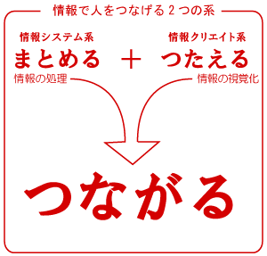
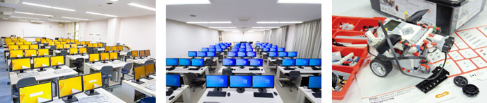
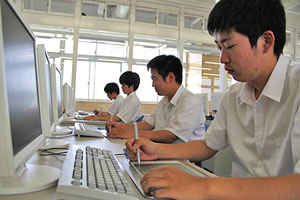

3年間の学び方
本校では、情報を処理する力と表現する力を共通して学び、系別の専門学習と卒業後の進路へつなげます。
- 情報コースとは
- コースデータ
- 3年間の流れ
- 2人教員制授業
- よくある質問
コースと授業
本校では、1年次から処理と表現の基礎を学び、興味と進路に応じて情報システム系または情報クリエイト系へ進みます。




本校では、情報を処理する力と表現する力を共通して学び、系別の専門学習と卒業後の進路へつなげます。
PC操作、情報処理、画像表現、C言語、アルゴリズム、資格学習を通して、2つの系へつながる土台を作ります。
情報システム系では、C言語からJavaへ進み、アルゴリズム、データベース、設計、ロボット制御を学びます。
情報クリエイト系では、画像、Web、DTP、コンテンツ設計、3Dグラフィックスを組み合わせて制作します。